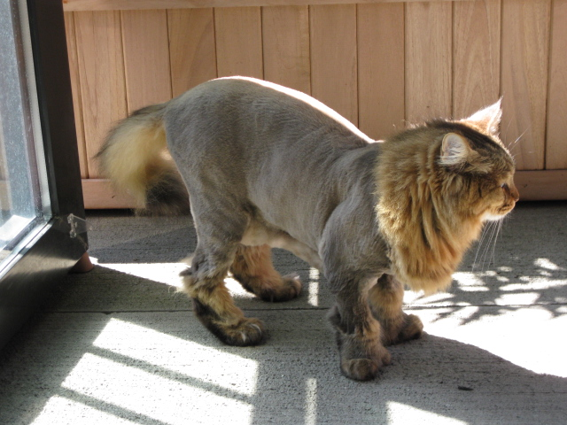

This is Bob's cat "Pete", sporting a new lion cut. Please do not laugh, it's not funny. What it is, on the contrary, is cool. VERY cool. In the heat of August, Pete is relieved to get rid of his heavy coat and is much more comfortable this way. He doesn't really care what he looks like, as long as he's cool. Having said that, Bob thinks he looks very cool with the lion cut. More photos to the left.